Real pages
Relative links, CSS imports, images, and scripts load from your content folder.
CONNECTED / INDEPENDENT / YOURS
This page and every asset arrived through DEEP. HTML, styles, images, and JavaScript brought together in one window.
Make yourself at home.

Relative links, CSS imports, images, and scripts load from your content folder.
DEEP authenticates the destination and verifies each complete resource before displaying it.
Loading a resource with JavaScript…